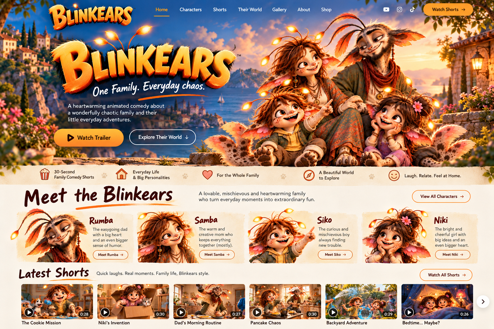
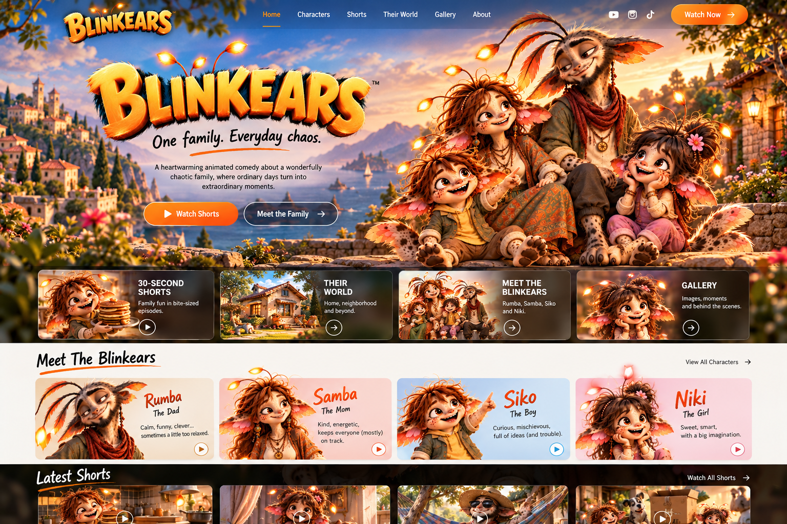

Rumba
DadEasygoing, clever and convinced he has everything under control — usually right before he doesn’t.

AN ORIGINAL ANIMATED FAMILY COMEDY
Rumba, Samba, Siko and Niki turn ordinary family moments into very short, very funny adventures.
MEET THE FAMILY

Easygoing, clever and convinced he has everything under control — usually right before he doesn’t.
Warm, quick and capable. The family’s center of gravity, even when the house has other plans.
Curious, inventive and permanently one idea away from a small domestic disaster.
Bright, fearless and imaginative — with impeccable timing when everyone else is already in trouble.
30-SECOND SHORTS
Everybody has an alibi. Nobody believes Siko.
Rumba repairs one tiny thing. Three other things immediately disagree.
A faster way to help Mom becomes a much longer afternoon.

THEIR WORLD
The heart of BLINKEARS is an inviting family home with a yard: breakfast disasters, chores, DIY projects, sibling schemes and the tiny misunderstandings every family recognizes.
But the front gate is always open. The Blinkears can head into town, visit neighbors, travel, celebrate holidays and stumble into bigger adventures without losing the everyday-comedy core.
Explore the lookGALLERY


ABOUT BLINKEARS
BLINKEARS is built around fast, visual family comedy designed for short-form viewing without feeling like toddler content. The comedy comes from personality, cause-and-effect and recognizable everyday life.